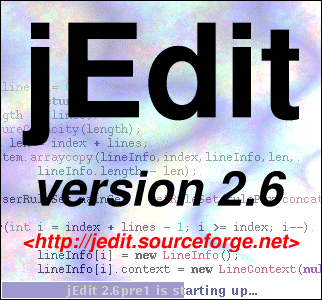

Chapter 3. Basic Features
This chapter describes jEdit's basic features, such as opening, saving, printing and simple editing. jEdit works in a similar fashion to most MacOS or Windows text editors; if you have used one before, you will be able to start using jEdit immediately.
Starting jEdit
Exactly how jEdit is started depends on your operating system; most often you would type "jedit" at the command line or double click on the jEdit icon (or select it from a menu, or whatever). jEdit will open any files specified on the command line or dropped onto its icon. It is also possible to specify a line or marker to locate the caret on from the command line; see Appendix A. If no initial file names are given, jEdit will load any files that were open in the previous session.
Once started, jEdit will display a "splash screen" with the jEdit logo and a progress bar that advances while jEdit loads.
Figure 3-1. The jEdit splash screen

The first time jEdit is run, it will display an "initial setup wizard" which will help you configure firewall settings (so that jEdit features that make HTTP connections will work), install plugins using the plugin manager (see Chapter 10 for more information about plugins) and give you some pointers to further information. Similarly, after upgrading to a new jEdit version, an "update wizard" will help you update your plugins and give pointers to the change log so you can see what's new. Both of these wizards are self-explanatory and very easy to use, and therefore will not be covered in any more detail in this manual. |
After jEdit has finished loading, the editor window will appear. Most user interface elements will look familiar to Windows or MacOS users, except for the text area, which has some unique features. The text area displays the contents of the currently opened buffer. The two scroll bars can be used to move around the buffer when there is more text than can fit on the screen. The blinking red line is called the caret. All text insertion and deletion is performed at the caret position.
Notice how the line with the caret is highlighted, and a faint blue dot appears at the end of each line. The current line highlighting aids in locating the caret, and the dot is an end of line marker.
The text area never allows the caret to be positioned closer than 3 lines to the top or bottom of the viewscreen. If an attempt is made to move it there, it will scroll in the appropriate direction to make 3 lines above and below the caret visible. Having some "context" always visible helps when programming, for example. This feature is called electric scrolling.
Clicking the text area with the right mouse button will display a menu of frequently-used editing commands. This menu can be edited in the Utilities>Global Options dialog box; see the section called The Global Options Dialog Box in Chapter 9.
The status bar at the bottom of the editor window displays useful information such as the current caret location, status messages issued by commands, and the state of the current buffer (modified since last save, read only, etc). The caret location is displayed in the following format:
col column position line current line/total lines ratio% |
Figure 3-2. The editor window